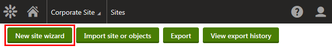
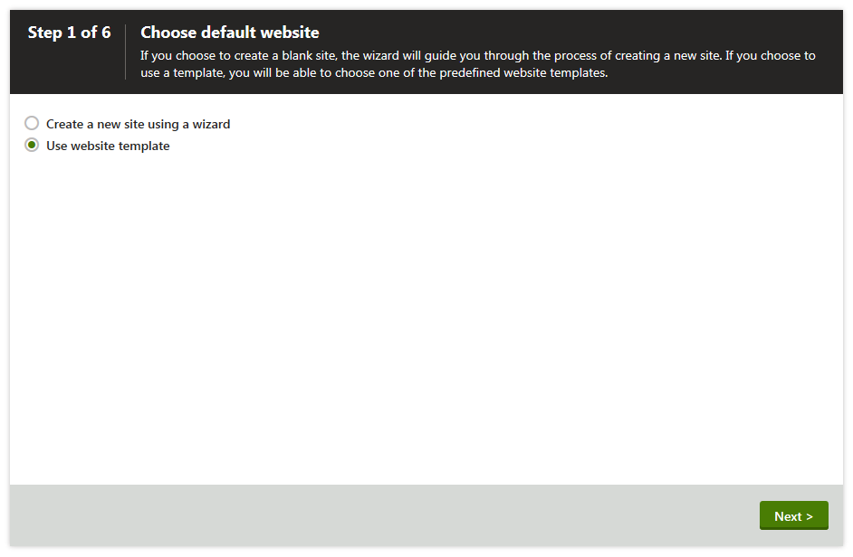
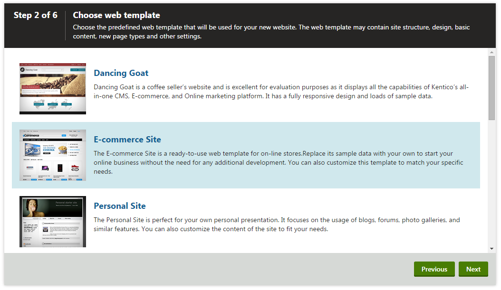
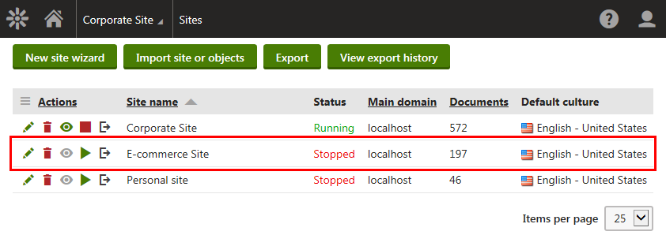

Installing the e-commerce sample sites
Examples in the E-commerce features section of the documentation are based on the sample Dancing Goat and E-commerce Site. In order to try out the examples in practice, we recommend that you install the Dancing Goat and E-commerce Site first.
You can install the e-commerce sample sites in both cases:
New Kentico installation
Launch Kentico_<version>.exe and follow the instructions in Installing Kentico - custom installation (you can also use quick installation if preferred).
It is highly recommended that you install all e-commerce and on-line marketing components when going through the custom installation. Otherwise, the sample sites may not work correctly.
In the Sample sites step, select Dancing Goat and E-commerce Site.
Click Next and continue with the installation.
After the system successfully finishes the installation, you can launch the sample Dancing Goat or E-commerce Site.

E-commerce Site home page
Existing Kentico installation
If you have already installed Kentico but without one or both of the e-commerce sample sites (Dancing Goat and E-commerce Site), you can add the site using the New site wizard.
Open the Sites application and click New site wizard.

Launching the New site wizardIn Step 1 of the wizard, select Use website template and click Next.

Selecting the Use website template optionIn Step 2, select Dancing Goat or E-commerce Site from the list of available website templates and click Next.

Selecting E-commerce Site from the list of available website templatesGo through the rest of the wizard as described in Creating new sites from templates.
We recommend that you leave the default settings unless you really need to change them according to your specific requirements.
When the wizard finishes, you can see in the Sites application that the e-commerce sample sites are listed among other available sites.

Available sitesRun (
 ) the Dancing Goat or E-commerce Site.
) the Dancing Goat or E-commerce Site.Go to Applications and click Live site.
The system opens the home page of the launched site.
E-commerce Site home page